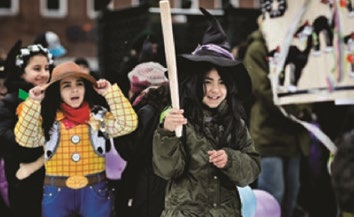
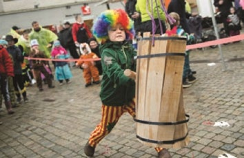
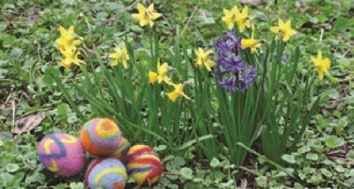
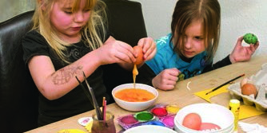
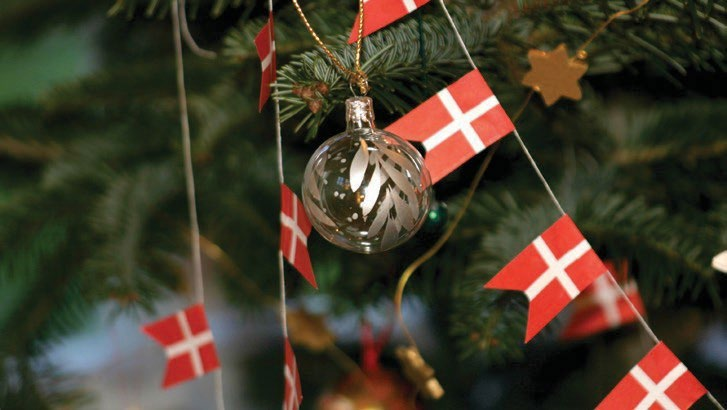

Fakta-ark 23: Traditioner og
Áudio
sidde 127
Fakta-ark 23: Traditioner og mærkedage
Læremateriale Til Medborgerskabsprøven




sidde 128
Som i mange andre lande er der i Danmark en række dage i løbet af året, hvor man markerer fx kirkelige højtider eller historiske begivenheder, der har haft stor betydning for Danmark. Ofte hører der særlige traditioner til de enkelte dage. På mange af disse dage har man normalt fri fra arbejde eller skole.
Læremateriale Til Medborgerskabsprøven Fakta-Ark 23: Traditioner Og Mærkedage
Dette fakta-ark handler om: • Traditioner og mærkedage
Mærkedage
Fastelavn
Fastelavn er et andet ord for karneval. Det er en forårsfest, der går helt tilbage til oldtidens Romerrige og Ægypten. Fastelavn var oprindeligt* begyndelsen på den kristne fastetid*, som begyndte 40 dage før påske.
I vore dage er der tradition for at fejre fastelavn ved, at børnene klæder sig ud og slår katten af tønden. Det siges, at der i gamle dage var en levende kat i tønden. I dag er der slik og frugt i tønden. Den, der slår det sidste bræt af tønden, kaldes kattekonge. Faste lavn ligger syv uger før påske.
Påske
Påsken er en af de vigtigste højtider i den kristne religion. Den kristne påske markerer, at Jesus blev kors fæstet* og døde, og at han opstod* fra de døde. Påsken markeres med gudstjenester og koncerter i kirkerne. Påskedagene er palmesøndag, skær torsdag, langfredag, påskedag og 2. påskedag. Alle disse dage er hellig dage, hvor de fleste har fri fra arbejde eller skole. I mange familier samles man til påskefrokoster, hvor man spiser en stor frokost og ofte drikker en særlig øl, der kaldes påskebryg.
sidde 129
Fra gammel tid er der også en tradition for, at man giver påskeæg. I dag er påskeæg ofte lavet af chokolade. Påsken ligger hvert år om foråret i enten marts eller april, men altså modsat julen ikke på faste datoer.
Læremateriale Til Medborgerskabsprøven Fakta-Ark 23: Traditioner Og Mærkedage
Pinse
Pinsen holdes inden for den kristne tradition syv uger efter påske. Den holdes til minde om, at Helligånden ifølge Bibelen kom ned til jorden den syvende søndag efter påskesøndag.
Pinsen ligger hvert år i maj eller juni og omfatter pinsedag og 2. pinsedag, som begge er helligdage. Der holdes pinsegudstjenester i kirkerne over hele landet.
1. maj
1. maj har siden 1889 været arbejdernes internationale demonstrations- og festdag. 1. maj arrangeres af fagforeninger og politiske organisationer. Det er forskelligt fra arbejdsplads til arbejdsplads, om man har fri den dag. Mange skolebørn har fri 1. maj.
5. maj
Den 5. maj 1945 blev Danmark befriet efter fem års tysk besættelse* under 2. Verdenskrig. Da meddelelsen om den tyske kapitulation* kom den 4. maj om aftenen, fjernede* mange mennesker de mørklægningsgardiner*, man skulle bruge under krigen. Og man lod lyset skinne ud gennem alle vinduer. Mange mindes stadig denne aften ved at sætte stearinlys i vinduerne.
Grundlovsdag
Den 5. juni er grundlovsdag. Den dag fejrer man, at Danmarks første frie forfat ning* blev indført den 5. juni 1849. Der holdes møder over hele landet (grund lovsmøder), hvor der bliver holdt taler om demokrati og folkestyre. Grundlovsdag er ikke en officiel fridag, men offentlige kontorer og mange butikker har lukket.
Sankthans
Den 23. juni om aftenen fejres sankt hans. Baggrunden for sankthansaften er en blanding af hedensk* folkelig tradition og kristendom. Sankthans aften samles man og tænder bål. I den folkelige tradition markerer festen, at det er midsommer.

sidde 130
Jul
Læremateriale Til Medborgerskabsprøven Fakta-Ark 23: Traditioner Og Mærkedage
Julen markerer i den kristne tradition Jesu fødsel. Juleaftensdag, den 24. december, holdes der julegudstjenester, og den dag er der mange børn og voksne, der går i kirke.
I Danmark har man normalt fri fra arbejde og skole den 24., 25. og 26. december. Disse tre dage kaldes juleaftensdag, juledag og 2. juledag. I mange familier fejrer flere generationer juleaften sammen. Man har juletræ*, spiser en traditionel jule middag, danser om juletræet, synger julesalmer og julesange og giver hinanden julegaver. I familier, hvor der er børn fra flere ægteskaber, holdes der ofte jul flere gange, så børnene både fejrer jul med deres far og deres mor. Juledag og 2. juledag samles man i mange familier til julefrokost.
På de fleste arbejdspladser og blandt venner holder man i december måned også julefrokoster. Der er forskellige traditioner for julefrokoster, men fælles for de fleste er, at man spiser meget mad og drikker øl og snaps.
Nytår
Nytåret fejres i Danmark den 31. december om aftenen, hvor mange holder fest sammen med deres venner og skyder fyrværkeri af. Mange har tradition for at lade nytårsfesten begynde med kongens nytårstale, som bliver vist i fjernsynet klokken 18. Nytårsdag, 1. januar, holder statsministeren en nytårstale, der bliver sendt i fjernsynet. Den første januar holder langt de fleste arbejdspladser og butikker lukket.
sidde 131
Øvrige Mærkedage
Læremateriale Til Medborgerskabsprøven Fakta-Ark 23: Traditioner Og Mærkedage
Ramadan og Eid
I takt med at flere folk i Danmark er muslimer, markerer flere institutioner på forskellig vis fejringen af Eid, dvs. festen, der markerer afslutningen på musli mernes fastemåned Ramadan. Ramadan holdes til minde om den måned, hvor profeten Muhammad ifølge Koranen fik sin første åbenbaring fra Allah via ærke englen Gabriel. I fastemåneden er der mange muslimer, der hverken spiser eller drikker, mens solen er på himlen. Når Ramadanen er forbi, fejres det med en fest, som hedder Eid al-Fitr.
Jødisk påske og pinse
En af de vigtigste jødiske højtider er den jødiske påske. Den holdes blandt andet til minde om jødernes udvandring fra Ægypten. Der er tradition for, at man spiser lam og usyret brød under den jødiske påske. Under den jødiske pinse fejrer man pagtslutningen på Sinai’s bjerg – hvor Moses modtog de ti bud, og hvor jøderne indgik pagt med Gud.
Kinesisk nytår
Af andre mærkedage, som er kommet til Danmark via den øgede kulturelle udveksling, kan nævnes kinesisk nytår. Kinesisk nytår er den vigtigste traditi onelle kinesiske helligdag. Det kinesiske nytår starter på den første dag i den første måned i den kinesiske kalender og slutter med lanternefestival på den 15. dag.
Andre mærkedage
Nogle fejrer den amerikanske tradition halloween, hvor børnene klæder sig ud som hekse, spøgelser eller lignende. Flere steder i landet fejres desuden karneval efter sydamerikansk forbillede med udklædning, sambamusik og optog.
Fonte: Læremateriale til Medborgerskabsprøven, SIRI.